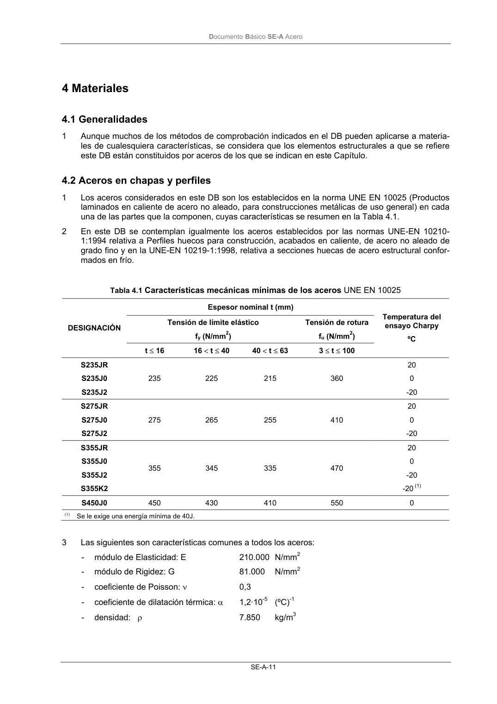

DB-SE-A Acero · edición 2007-10-23 · capa oficial
Documento DB-SE-A-oficial · SHA-256 del PDF 9ed9ea694aabfbda3bfbbef40dfe9223fde05d13c35bc2ba9751e5a96a22a64f
Copia fiel del PDF fuente · Fuente oficial
Ficha de la disposición en la fuente oficial
Formatos: JSON del segmento · Markdown
3 Durabilidad 1 Ha de prevenirse la corrosión del acero mediante una estrategia global que considere en forma je- rárquica al edificio en su conjunto (situación, uso, etc.), la estructura (exposición, ventilación, etc.), los elementos (materiales, tipos de sección, etc.) y, especialmente, los detalles, evitando: a) La existencia de sistemas de evacuación de aguas no accesibles para su conservación que puedan afectar a elementos estructurales. b) la formación de rincones, en nudos y en uniones a elementos no estructurales, que favorez- can el depósito de residuos o suciedad. c) el contacto directo con otros metales (el aluminio de las carpinterías de cerramiento, muros cortina, etc.). d) el contacto directo con yesos. 2 En el proyecto de edificación se indicarán las protecciones adecuadas a los materiales para evitar su corrosión, de acuerdo con las condiciones ambientales internas y externas del edificio. A tal fin se podrá utilizar la norma UNE-ENV 1090-1: 1997, tanto para la definición de ambientes, como pa- ra la definición de las especificaciones a cumplir por las pinturas y barnices de protección, así co- mo por los correspondientes sistemas de aplicación. 3 Los materiales protectores deben almacenarse y utilizarse de acuerdo con las instrucciones del fa- bricante y su aplicación se realizará dentro del periodo de vida útil del producto y en el tiempo indi- cado para su aplicación, de modo que la protección quede totalmente terminada en dichos plazos. 4 A los efectos de la preparación de las superficies a proteger y del uso de las herramientas adecua- das, se podrá utilizar la norma UNE-ENV 1090-1: 1997. 5 Las superficies que no se puedan limpiar por chorreado, se someterán a un cepillado metálico que elimine la cascarilla de laminación y después se deben limpiar para quitar el polvo, el aceite y la grasa. 6 Todos los abrasivos utilizados en la limpieza y preparación de las superficies a proteger, deben ser compatibles con los productos de protección a emplear. 7 Los métodos de recubrimiento: metalización, galvanización y pintura deben especificarse y ejecu- tarse de acuerdo con la normativa específica al respecto y las instrucciones del fabricante. Se po- drá utilizar la norma UNE-ENV 1090-1: 1997. 8 Se definirán y cuidarán especialmente las superficies que deban resistir y transmitir esfuerzos por rozamiento, superficies de soldaduras y para el soldeo, superficies inaccesibles y expuestas exte- riormente, superficies en contacto con el hormigón, la terminación de las superficies de aceros re- sistentes a la corrosión atmosférica, el sellado de espacios en contacto con el ambiente agresivo y el tratamiento de los elementos de fijación. Para todo ello se podrá utilizar la norma UNE-ENV 1090-1: 1997. 9 En aquellas estructuras que, como consecuencia de las consideraciones ambientales indicadas, sea necesario revisar la protección de las mismas, el proyecto debe prever la inspección y mante- nimiento de las protecciones, asegurando, de modo permanente, los accesos y el resto de condi- ciones físicas necesarias para ello. DocumentoBásico SE-A Acero SE-A-11
